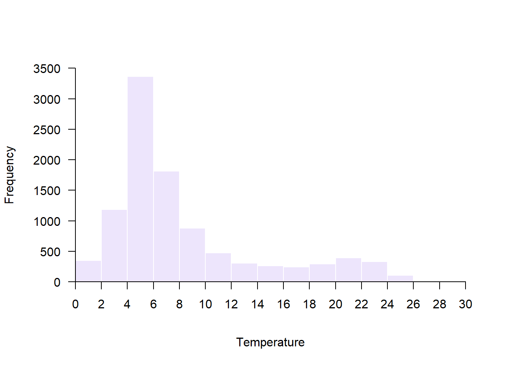
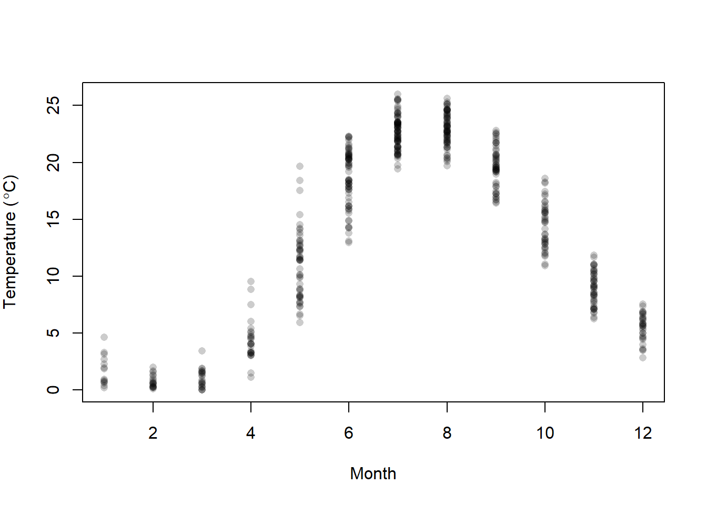
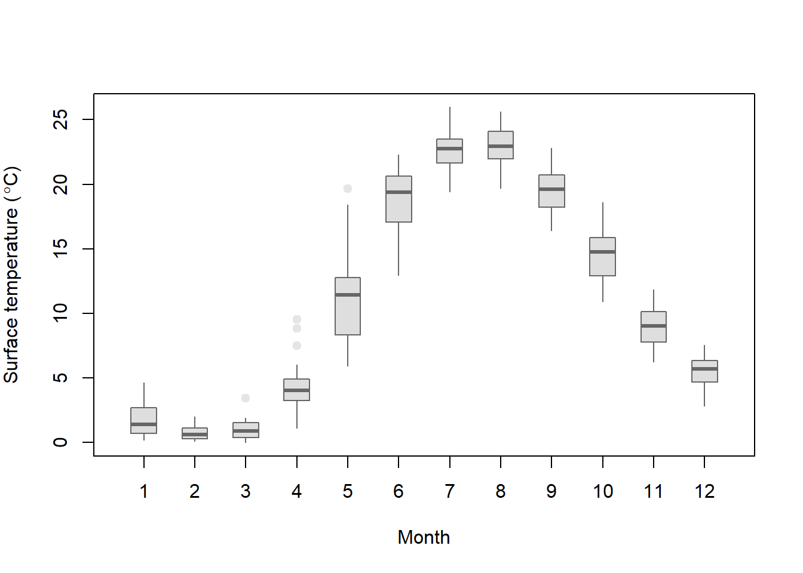

4.2 Plotting with base R
Let’s look at a few simple types of plots in R. The default graphics in R are not much to look at. But, there are a ton of ways to modify these plots, and the user (that’s you!) can build plots from the ground up if needed.
One of the great things about base graphics is that many of the plot types take the same, or similar arguments that are all based on shared graphical parameters.
You can access the help file for these shared graphical parameters by running ?pars in the console. We will use many of these in the sections that follow.
4.2.1 Histograms
Let’s start with the histogram function that we began playing with at the end of Chapter 3.
The hist() function plots a histogram but it actually does a whole lot more than just that. Like other plotting utilities, it can take a wide variety of arguments and it actually does some basic data analysis behind the scenes. All of the arguments are optional or have default values with the exception of the data that we want to plot (a numeric variable). This is the case for most plotting functions in the base graphics for R.
Start by reading in the data contained within the physical.csv file from the class data folder. Remember, I am assuming that your code is inside of a folder that also contains your class data folder that you named data.
# I added stringsAsFactors = FALSE to read in all
# text strings as `chr`.
otsego <- read.csv("data/physical.csv", stringsAsFactors = FALSE)These are data collected each year from Otsego Lake by students, staff, and faculty at the SUNY Oneonta Biological Field Station in Cooperstown, NY, USA. The data set includes temperature (°C), pH, dissolved oxygen, and specific conductance measurements from a period of about 40 years. There are all kinds of cool spatial and seasonal patterns in the data that we can look at. We will use temperature for the examples that follow.
Make a histogram of temperature across all depths and dates just to see what we are working with here:
The default histogram in base graphics leaves much to be desired. Thankfully, it is easy to modify the look of these figures. For example, we can add labels to the x and y-axis using xlab and ylab, and we can give the histogram a meaningful title by adding main = ... to the hist() call or remove it completely by saying main = "".
We can make the axes cross at zero if we are concerned about that. We need to do this by specifying yaxt = "n", xaxt = "n" in the hist() call and then follow up by telling R exactly where to start each of the axes. In this example, I also add some changes to the color of the bars (col) and the color of the borders (border). Finally, I fix the x- and y-axis scales so I know where they’ll start.
# Make the histogram
hist(otsego$temp,
xlab = "Temperature",
ylab = "Frequency",
main = "",
xaxt = "n",
yaxt = "n",
col = "gray87",
border = "white",
xlim = c(0, 30),
ylim = c(0, 3500)
)
# Add an x-axis going from zero to thirty degrees
# in increments of 2 degrees and start it at zero
axis(side = 1, at = seq(from = 0, to = 30, by = 2), pos = 0)
# Add a rotated y-axis with default scale and
# start it at zero
axis(side = 2, las = 2, pos = 0)Colors!!!
If gray87 is not your style (whatevs), there are another 656 pre-named colors in R. You can see their names by running colors() in the console like this:
If you are a little more adventurous, you might try the rgb() color specification or hex values. I really like the rgb() specification because you can include an alpha channel to make your colors transparent (oooooh!). For example, if I change my code above to use the following:
I get a transparent, purple histogram.

So purply.
There are tons of great blogs and eBooks with whole chapters devoted to colors and color palletes in R. There are even whole packages we’ll work with dedicated to colors. By all means, check them out! We will work with a few as we continue to increase complexity.
4.2.2 Scatterplots
Scatter plots are a great starting point for doing exploratory data analysis or for displaying raw data along with summary graphics. They are also the default behavior for the plot() function for continuous variables in base R.
Let’s demonstrate by by plotting surface temperature (depth = 0.1 m) by month across years. We’ll use the data management skills we picked up in Chapter 3 to filter the data first.
# Filter to get July surface temperatures
surface <- otsego %>% filter(depth == 0.1)
# Default scatter plot
plot(x = surface$month, y = surface$temp)As with the hist() function, the default here is underwhelming. We can use many of the same arguments that we specified in hist() to dress this up a bit. This time, we will specify a plotting character pch that corresponds to a filled circle. Then, we tell R to give it an rgb() background (bg) with no color for lines that go around each point. That way the data points are darker where there is overlap between them. Finally, we use expression() to include the degree symbol in the y-axis label.
# Better scatter plot
plot(x = surface$month,
y = surface$temp,
pch = 21,
bg = rgb(0, 0, 0, 0.2),
col = NA,
xlab = "Month",
ylab = expression(paste("Temperature ( ", degree, "C)"))
)
This is a lot more informative because it shows us where most of the observations fall within a given month, and how much variability there is. But, it would be nice to have some summary.
4.2.3 Lines
We can plot lines in a few different ways in the base graphics of R. We can create stand-alone line graphs with data in R pretty easily with the plot() function we used for scatter plots in the preceding section.
For example, let’s say that we want to just plot average surface temperature in each month as a line graph. We can summarize the data quickly and then plot those:
mids <- surface %>%
group_by(month) %>%
summarize(avg = mean(temp))
plot(mids$month, mids$avg, type = "l", xlab = "Month", ylab = "Average")We could even add these to the scatter plot of our raw data using the lines() function. Play around with lty and lwd to see if you can figure out what they do. If you get stuck, don’t forget to Google it! (Worst Stats Text eveR.)
# Same scatter plot
plot(x = surface$month,
y = surface$temp,
pch = 21,
bg = rgb(0, 0, 0, 0.2),
col = NA,
xlab = "Month",
ylab = expression(paste("Temperature ( ", degree, "C)"))
)
# Add a thick, dotted line that is gray (this is a gray40 job)
lines(mids$month, mids$avg, lty = 3, lwd = 2, col = "gray40")We could also add the means to the main plot with points() and choose a different size or color than the raw data. We’ll look at these options and more as we step up complexity.
For raw data like these, though, we are better off using a box plot to show those types of summaries.
4.2.4 Boxplots
The basic box plot is straightforward to create, but can be a real pain to modify because the syntax is slightly different from the other plotting functions we’ve worked with so far.
Let’s try to summarize surface temperature by month using a box plot to see how these work in the base R graphics. Notice that we are specifying the variables as a formula here, and explicitly telling R what the data set is:
boxplot(temp~month, data = surface,
xlab = "Month",
ylab = expression(paste("Surface temperature ( ", degree, "C)")))Wow, that was waaaaay to easy! Have you ever tried to make one of those in Excel? Forget about it. It would take you half a day, and then when you realized you forgot ten data points you would have to do it all again.
But, it is still much ugly. Maybe there is a way we can change that?
Of course there is!
Let’s add a little color and tweak some options. For a full set of optional arguments you can change, run ?bxp in the console. (Ooh, that one is sneaky: bxp() is the function inside of boxplot() that actually draws the plots).
Options are named consistently by the part of the plot. For example, boxwex, boxcol and boxfill all control the look of the box. Likewise, the options boxcol, whiskcol and staplecol control the colors of the box, whiskers, and staples, respectively. Nifty, right? Play with the settings below to see what each one does. Then, go explore some more options.It is the easiest way to learn when you are learning from The Worst Stats Text eveR.
boxplot(temp~month,
data = surface,
xlab = "Month",
ylab = expression(paste("Surface temperature ( ", degree, "C)")),
border = "gray40",
boxwex = 0.50, boxcol = "gray40", boxfill = "gray87",
whisklty = 1, whisklwd=1, whiskcol = "gray40",
staplewex = 0, staplecol = NA,
outpch = 21, outbg = "gray90", outcol = "gray90"
)
Finally, we can combine this with a scatter plot to jitter our raw data over the top of the boxes in each month:
boxplot(temp~month,
data = surface,
xlab = "Month",
ylab = expression(paste("Surface temperature ( ", degree, "C)")),
border = "gray40",
boxwex = 0.50, boxcol = "gray40", boxfill = "gray87",
whisklty = 1, whisklwd=1, whiskcol = "gray40",
staplewex = 0, staplecol = NA,
outpch = 21, outbg = NA, outcol = NA
)
points(jitter(surface$month), surface$temp, cex=.4, pch=19, col=rgb(0,0,0,0.2))That is actually starting to look pretty snazzy! We’ll continue to work to improve our base graphics as we move forward. For now, let’s have a look at how to do these things in ggplot2 next.